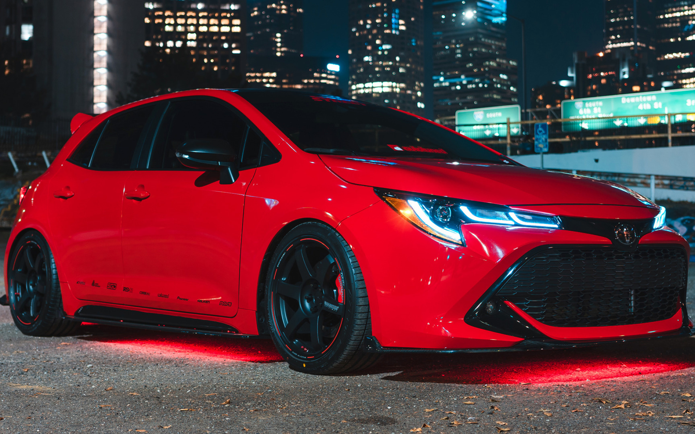

BMW m6
BMW m6 é uma versão de alto desempenho do coupé / conversível da Série 6, projetado e desenvolvido pela divisão de automobilismo da BMW. BMW m6 foi baseado nas gerações subseqüentes da série 6.BMW m6 foi substituído pelo m8 em junho de 2019.

Honda Civic
O motor elétrico gera 184 cv de potência e 32,1 kgfm de torque, enquanto o propulsor a combustão entrega potência de 143 cv e torque de 19,1 kgfm. Com os dois motores, o Civic é capaz de acelerar de 0 a 100 km/h em 7,8 segundos e tem velocidade máxima de 180 km/h.

Mercedes-AMG A 35 4MATIC Sedan
O A 35 Sedan vem equipado com um motor 2.0 turbo, com injeção direta, que gera 360 cv de potência e 40,8 kgfm de torque. Ele também possui um câmbio automático de dupla embreagem e 7 marchas com tração integral sob demanda 4Matic.

Range Rover Evoque
O Range Rover Evoque é um utilitário esportivo compacto apresentado pela Land Rover em 1 de julho de 2010. O carro foi apresentado pela primeira vez em 2008 no salão de Detroit como conceito LRX. O SUV compacto da Land Rover possui um belo motor de 240 cavalos de potência e um torque (em mkgf) de 34,7. Seu motor é um 2.0 turbo movido a diesel ou a gasolina, o que permite que o carro alcance 0 a 100 km/h em 7,6 segundos, com velocidade máxima de 217 km/h. Na segunda geração do modelo, que saiu em 2019, a potência foi aumentada para 300 cavalos, além de fazer um 0 a 100 em 6.8 segundos, quase 1 segundo a menos que a geração anterior.

Corrola
O GR Corolla seria um "prêmio de consolação" para os mercados que não tiveram o GR Yaris. Dessa forma, o Brasil estaria para receber ao menos 300 unidades do Corolla esportivo para distribuir em nosso mercado por meio das concessionárias Toyota. Herrero confirmou que o Corolla esportivo será lançado no Brasil nos próximos meses: "a data exata e o preço ainda não foram definidos, mas esperamos que as primeiras unidades cheguem no final deste ano. Haverá dois níveis de acabamento, incluindo uma 'Circuit Edition' com todos os equipamentos opcionais".